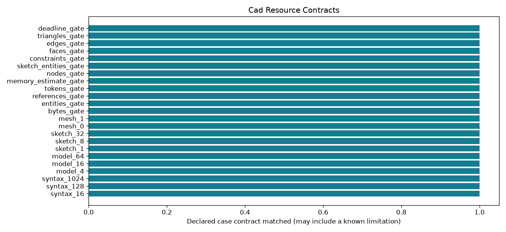

Offline, bounded research controls. A passing check may document a failure or an abstention.
| control_id | workload | scale | outcome | expected | checks_pass |
|---|---|---|---|---|---|
| syntax_16 | syntax | 16 | ok | ok | True |
| syntax_128 | syntax | 128 | ok | ok | True |
| syntax_1024 | syntax | 1024 | ok | ok | True |
| model_4 | model | 4 | ok | ok | True |
| model_16 | model | 16 | ok | ok | True |
| model_64 | model | 64 | ok | ok | True |
| sketch_1 | sketch | 1 | ok | ok | True |
| sketch_8 | sketch | 8 | ok | ok | True |
| sketch_32 | sketch | 32 | ok | ok | True |
| mesh_0 | mesh | 1 | ok | ok | True |
| mesh_1 | mesh | 1 | ok | ok | True |
| bytes_gate | syntax | 32 | resource_exhausted | resource_exhausted | True |
| entities_gate | syntax | 32 | resource_exhausted | resource_exhausted | True |
| references_gate | syntax | 32 | resource_exhausted | resource_exhausted | True |
| tokens_gate | syntax | 32 | resource_exhausted | resource_exhausted | True |
| memory_estimate_gate | syntax | 32 | resource_exhausted | resource_exhausted | True |
| nodes_gate | model | 65 | resource_exhausted | resource_exhausted | True |
| sketch_entities_gate | sketch | 33 | resource_exhausted | resource_exhausted | True |
| constraints_gate | sketch | 8 | resource_exhausted | resource_exhausted | True |
| faces_gate | topology | 1 | resource_exhausted | resource_exhausted | True |
| edges_gate | topology | 1 | resource_exhausted | resource_exhausted | True |
| triangles_gate | mesh | 1 | resource_exhausted | resource_exhausted | True |
| deadline_gate | deadline_control | 1 | resource_exhausted | resource_exhausted | True |
Detailed evidence · CSV · Contract
